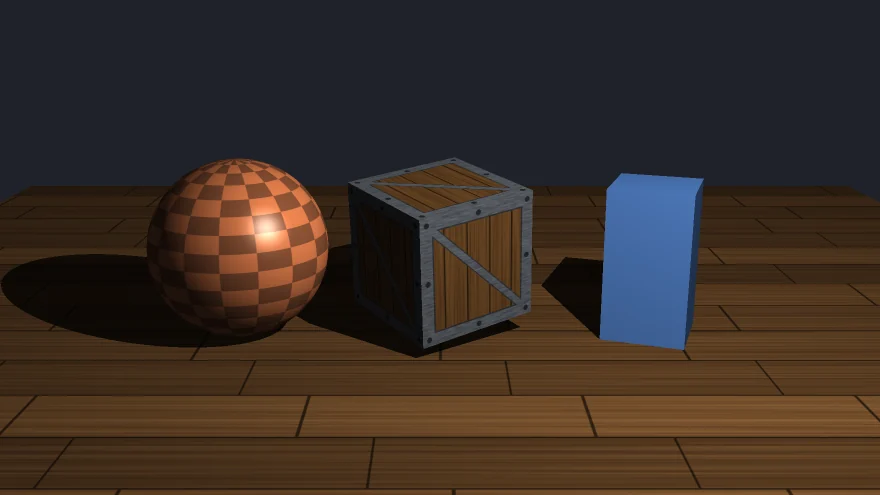

Model Loading
Model#
examples/Sources/11-ModelLoading, run with swift run ModelLoading. Download all examples or see how to run them.A file usually contains several meshes arranged in a hierarchy, each with its own transform. A Model type collects them so that loading and drawing a whole file is one line each.
Model loading in C++
Model I/O and MetalKit's mesh types are not part of metal-cpp. The C++ version of this section loads Wavefront OBJ files with the single-header library tinyobjloader and builds the Metal buffers by hand. The ideas are the same: a model is meshes, a mesh has one vertex buffer and one index buffer per material, and a material is values plus textures. To load USD from C++, call Model I/O from a small Objective-C++ file, as the window code in Project Setup does for AppKit, or convert the model to OBJ or glTF.
The Model class#
import MetalKit
import ModelIO
final class Model {
struct Node {
let mesh: Mesh
let transform: float4x4 // mesh space to model space
}
let nodes: [Node]
init(url: URL,
device: MTLDevice,
vertexDescriptor: MDLVertexDescriptor,
loader: MTKTextureLoader) throws {
let allocator = MTKMeshBufferAllocator(device: device)
let asset = MDLAsset(url: url,
vertexDescriptor: vertexDescriptor,
bufferAllocator: allocator)
asset.loadTextures()
let (mdlMeshes, mtkMeshes) = try MTKMesh.newMeshes(asset: asset, device: device)
nodes = zip(mdlMeshes, mtkMeshes).map { mdlMesh, mtkMesh in
Node(mesh: Mesh(mdlMesh: mdlMesh, mtkMesh: mtkMesh, loader: loader),
transform: Model.worldTransform(of: mdlMesh))
}
}
/// Multiplies the local transforms from the mesh up to the root.
private static func worldTransform(of object: MDLObject) -> float4x4 {
var transform = float4x4.identity
var current: MDLObject? = object
while let node = current {
if let local = node.transform {
transform = local.matrix * transform
}
current = node.parent
}
return transform
}
}
#include "tiny_obj_loader.h"
class Model {
public:
struct Node {
Mesh mesh;
simd::float4x4 transform; // mesh space to model space
};
std::vector<Node> nodes;
simd::float3 minBounds = { 1e30f, 1e30f, 1e30f};
simd::float3 maxBounds = {-1e30f, -1e30f, -1e30f};
Model(const std::string& directory, const std::string& file,
MTL::Device* device, MTL::CommandQueue* queue) {
tinyobj::ObjReaderConfig config;
config.triangulate = true;
config.mtl_search_path = directory;
tinyobj::ObjReader reader;
if (!reader.ParseFromFile(directory + file, config)) {
throw std::runtime_error(reader.Error());
}
const tinyobj::attrib_t& attrib = reader.GetAttrib();
std::vector<MeshMaterial> materials;
for (const tinyobj::material_t& m : reader.GetMaterials()) {
materials.push_back(makeMaterial(m, directory, device, queue));
}
if (materials.empty()) materials.push_back(MeshMaterial{});
for (const tinyobj::shape_t& shape : reader.GetShapes()) {
std::vector<MeshVertex> vertices;
std::vector<uint32_t> indices;
for (const tinyobj::index_t& index : shape.mesh.indices) {
MeshVertex v{};
std::memcpy(v.position, &attrib.vertices[3 * index.vertex_index], sizeof(v.position));
if (index.normal_index >= 0)
std::memcpy(v.normal, &attrib.normals[3 * index.normal_index], sizeof(v.normal));
if (index.texcoord_index >= 0) {
v.uv[0] = attrib.texcoords[2 * index.texcoord_index];
v.uv[1] = 1.0f - attrib.texcoords[2 * index.texcoord_index + 1];
}
simd::float3 p = {v.position[0], v.position[1], v.position[2]};
minBounds = simd::min(minBounds, p);
maxBounds = simd::max(maxBounds, p);
indices.push_back(uint32_t(vertices.size()));
vertices.push_back(v);
}
Mesh mesh;
mesh.vertexBuffer = device->newBuffer(vertices.data(), sizeof(MeshVertex) * vertices.size(),
MTL::ResourceStorageModeShared);
int materialIndex = shape.mesh.material_ids.empty() ? 0 : std::max(shape.mesh.material_ids[0], 0);
mesh.submeshes.push_back({device->newBuffer(indices.data(), sizeof(uint32_t) * indices.size(),
MTL::ResourceStorageModeShared),
indices.size(), materialIndex});
mesh.materials = materials;
// OBJ files have no node hierarchy, so every transform is the identity.
// A format with a hierarchy multiplies the local transforms up to the root here.
nodes.push_back({mesh, matrix_identity_float4x4});
}
}
};
Every MDLObject can carry a transform relative to its parent. Walking up the parent chain and multiplying gives the mesh's placement within the model. Simple OBJ files have no hierarchy, so the loop just returns the identity. USD files often do, and skipping this step is why parts of a model sometimes appear piled up at the origin.
Drawing#
Each node combines the model's own matrix with its node transform:
extension Model {
func draw(with encoder: MTLRenderCommandEncoder,
modelMatrix: float4x4,
uniforms: inout Uniforms,
fallback: MTLTexture) {
for node in nodes {
uniforms.model = modelMatrix * node.transform
uniforms.normalMatrix = uniforms.model.upperLeft.inverse.transpose
encoder.setVertexBytes(&uniforms, length: MemoryLayout<Uniforms>.stride, index: 1)
node.mesh.draw(with: encoder, fallback: fallback)
}
}
}
void drawModel(const Model& model, MTL::RenderCommandEncoder* encoder,
simd::float4x4 modelMatrix, Uniforms& uniforms, MTL::Texture* fallback) {
for (const Model::Node& node : model.nodes) {
uniforms.model = modelMatrix * node.transform;
uniforms.normalMatrix = simd::transpose(simd::inverse(upperLeft(uniforms.model)));
encoder->setVertexBytes(&uniforms, sizeof(Uniforms), 1);
node.mesh.draw(encoder, fallback);
}
}
In the renderer:
// init
let url = Bundle.main.url(forResource: "backpack", withExtension: "usdz")!
model = try! Model(url: url, device: device, vertexDescriptor: mdlDescriptor, loader: loader)
// draw(in:)
encoder.setRenderPipelineState(pipelineState)
encoder.setDepthStencilState(depthState)
encoder.setFragmentBytes(&fragmentUniforms, length: MemoryLayout<FragmentUniforms>.stride, index: 1)
encoder.setFragmentSamplerState(samplerState, index: 0)
model.draw(with: encoder,
modelMatrix: float4x4(rotation: time * 0.5, axis: [0, 1, 0]),
uniforms: &uniforms,
fallback: whiteTexture)
// constructor
model = new Model("models/backpack/", "backpack.obj", device, commandQueue);
// draw()
encoder->setRenderPipelineState(pipelineState);
encoder->setDepthStencilState(depthState);
encoder->setFragmentBytes(&fragmentUniforms, sizeof(FragmentUniforms), 1);
encoder->setFragmentSamplerState(samplerState, 0);
drawModel(*model, encoder,
rotation(time * 0.5f, simd::float3{0, 1, 0}),
uniforms, whiteTexture);
Add the point lights from the previous section and you have a properly lit, textured model.

Finding models#
- Apple publishes sample USDZ models in its AR Quick Look gallery.
- Sites such as Sketchfab, Poly Haven and Kenney offer free models. Check each license.
- Blender exports both OBJ and USD.
When a model looks wrong, the usual suspects are, in order: flipped texture coordinates, missing normals, a scale that is off by a factor of 100 (centimeters versus meters), and ignored node transforms.
Bounds and framing#
An unknown model can be any size. Model I/O reports the bounding box, which lets you scale and center anything automatically:
let bounds = asset.boundingBox
let size = bounds.maxBounds - bounds.minBounds
let center = (bounds.maxBounds + bounds.minBounds) * 0.5
let scale = 2.0 / max(size.x, max(size.y, size.z))
let normalize = float4x4(scale: Float3(repeating: scale)) * float4x4(translation: -center)
simd::float3 size = model->maxBounds - model->minBounds;
simd::float3 center = (model->maxBounds + model->minBounds) * 0.5f;
float scale = 2.0f / std::max(size.x, std::max(size.y, size.z));
simd::float4x4 normalize = scaling(simd::float3{scale, scale, scale}) * translation(-center);
Multiply normalize into the model matrix and every model fits in a box two units wide around the origin.
What we left out#
A production loader also handles skeletal animation (MDLSkeleton, MDLAnimationBindComponent), morph targets, cameras and lights stored in the file, and it caches textures so an image shared by ten materials is loaded once. Add a dictionary from URL to MTLTexture to the material loader as a first improvement.
Exercises#
- Draw the model ten times using the cube positions from the first section.
Show solution
Call the model's draw method in a loop with a different model matrix each time, multiplying the per-instance translation and rotation by the normalization matrix. The vertex and index buffers are shared, so ten copies cost ten sets of draw calls and no extra memory. For many copies, switch to instancing.
- Implement the texture cache.
Show solution
Keep a dictionary from the texture's file path to the loaded texture, and look it up before loading. In Swift a
[URL: MTLTexture]on the loader object; in C++ astd::unordered_map<std::string, MTL::Texture*>. Models commonly reference the same image from many materials, so this cuts both load time and memory. - Load a model with no textures and confirm that the fallback texture and
baseColorproduce a sensible result. You will need to passbaseColorto the shader in the fragment uniforms.Show solution
Add
float3 baseColorto the fragment uniforms, set it per submesh from the material, bind the 1 × 1 white texture where there is no image, and multiply.float3 albedo = baseColorTexture.sample(mapSampler, in.uv).rgb * uniforms.baseColor;White times the color gives the color; an image times a white base color gives the image.